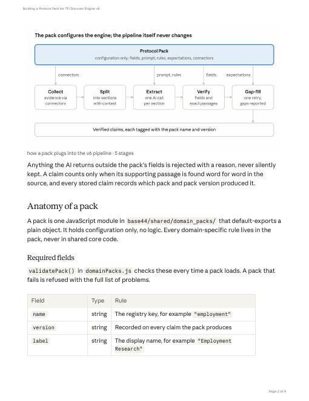

Building a Protocol Pack for TFI Discover Engine v6
A guide for developers adding a new domain to an AI evidence-extraction engine without changing engine code. Written from the source code, so every field, rule and error message matches the system.
- A diagram of where a pack plugs into each stage of the pipeline
- Required and optional fields, with the rules the loader enforces
- A worked example: build, register and activate a pack
- Tests to write, and a table of real error messages with fixes